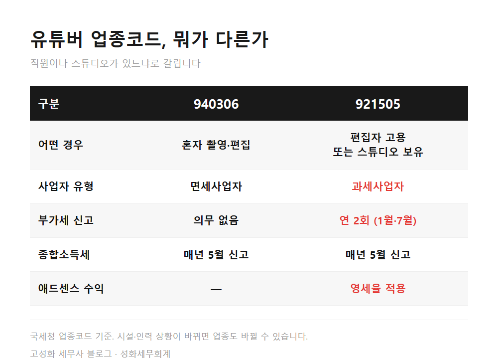
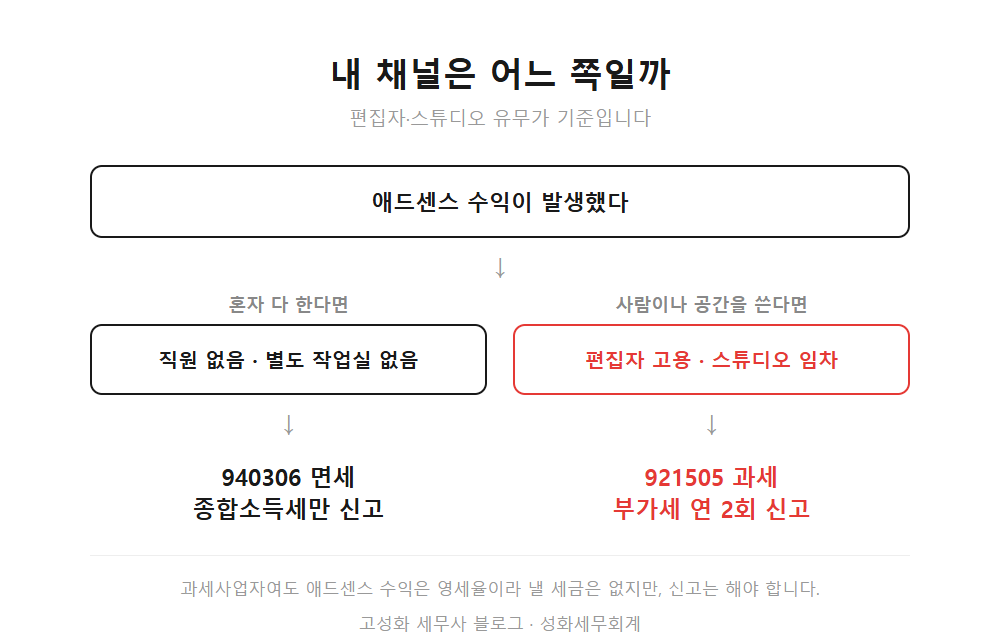
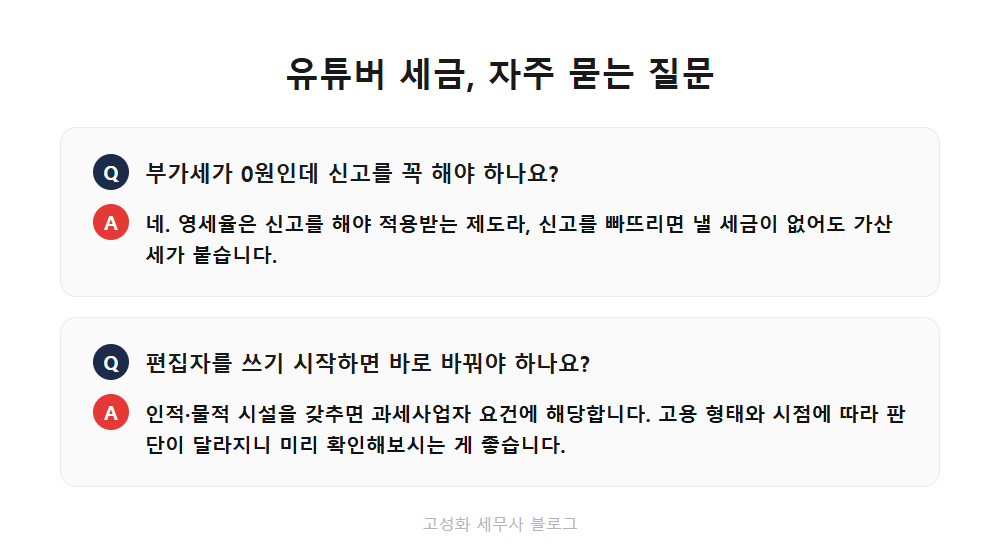

← 세무칼럼 목록
부가세·개인사업자

유튜버 부가세, 업종코드 하나로 갈립니다
구독자가 늘고 애드센스 첫 정산금이 들어온 시점에 상담을 오시는 크리에이터분들이 많습니다. 대부분 비슷한 질문을 하십니다. "사업자등록을 해야 한다는데, 뭘로 해야 하는지 모르겠어요." 성화세무회계는 이 첫 단추를 제대로 끼우는 게 이후 몇 년의 세금을 좌우한다고 봅니다.
이 글을 보고 계신 분은 아마 ① 애드센스 수익이 막 들어오기 시작해 사업자등록을 알아보고 계시거나, ② 이미 등록은 했는데 부가세 신고를 해야 하는 건지 헷갈리시거나, ③ 편집자를 쓰기 시작하면서 뭔가 달라지는 게 있는지 궁금하신 분일 겁니다. 미리 말씀드리면, 갈림길은 딱 하나입니다. 사람을 쓰거나 작업실을 두고 있느냐입니다.
이 글에서 다루는 내용
- 업종코드 두 개, 세금이 완전히 다릅니다
- 애드센스는 영세율입니다, 신고는 별개고요
- 신고 안 하면 모를 거라는 생각
한눈에 보기



정리하면
혼자 하시면 940306으로 면세, 편집자나 스튜디오가 있으면 921505로 과세입니다. 애드센스 수익 자체는 영세율이라 낼 부가세가 없지만, 신고는 해야 하고 오히려 장비 매입세액을 돌려받을 여지가 있습니다.
지금 어느 쪽에 해당하는지, 편집자를 쓰기 시작하면 언제 업종을 바꿔야 하는지는 채널 상황마다 다릅니다. 수익 규모와 지출 내역을 놓고 보면 어느 쪽이 유리한지 금방 답이 나옵니다. 처음 시작하시는 단계라면 더더욱 편하게 문의 주세요.
본문 전체와 근거 조문은 블로그에서 확인하실 수 있습니다.